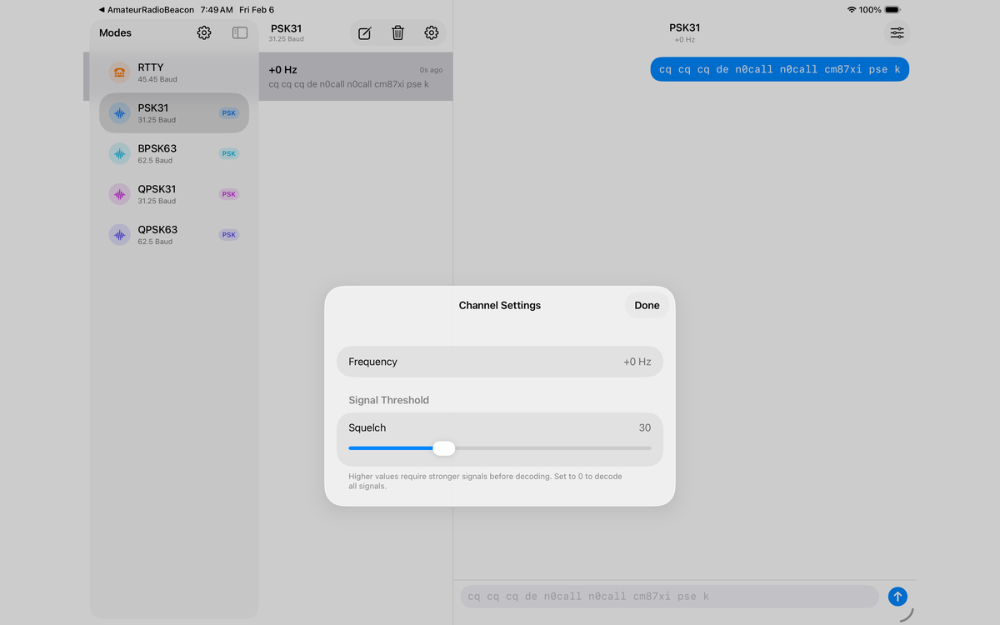
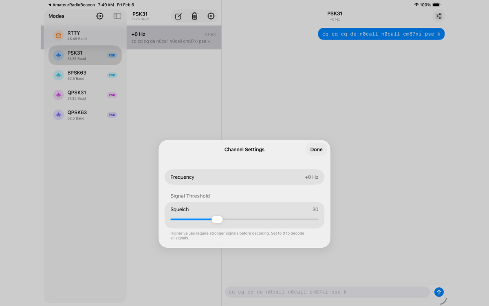

📡
Multi-Channel Decoding
Monitor multiple frequencies simultaneously. Automatically detects and decodes signals across the audio passband.
💬
iMessage-Style Interface
Familiar chat interface with message bubbles. Swipe to reveal timestamps, tap to transmit.
📍
Automatic Grid Square
Uses GPS to automatically determine your Maidenhead grid locator. Perfect for portable operation.
🔊
USB Audio Interface
Works with external USB soundcards connected between your iPhone and radio. Full duplex operation.
☁️
iCloud Sync
Your settings sync automatically across all your devices via iCloud.
📊
Band Frequency Reference
Built-in reference for digital mode calling frequencies on all HF bands from 160m to 6m.
 
